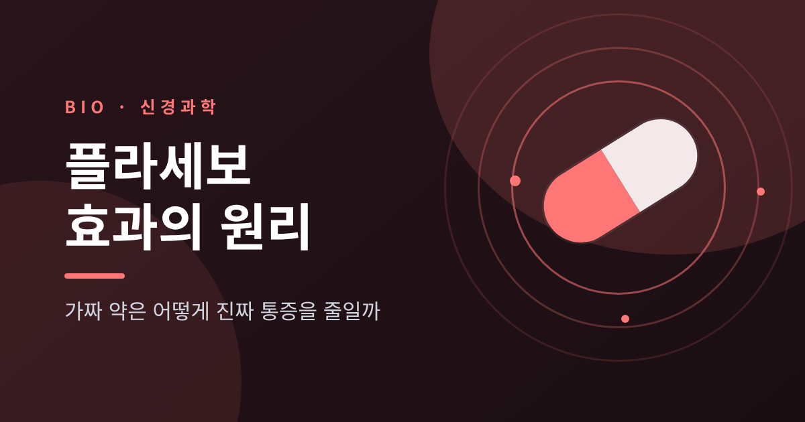
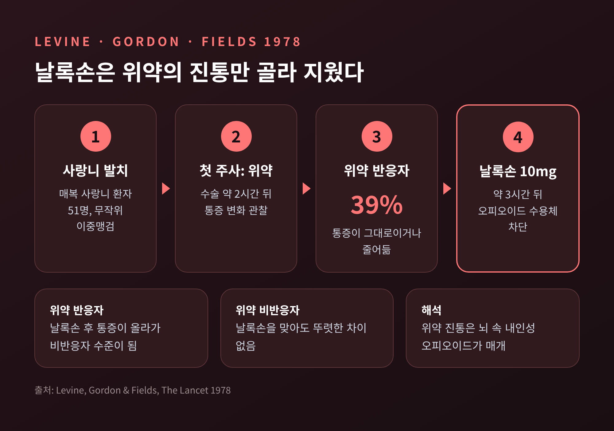
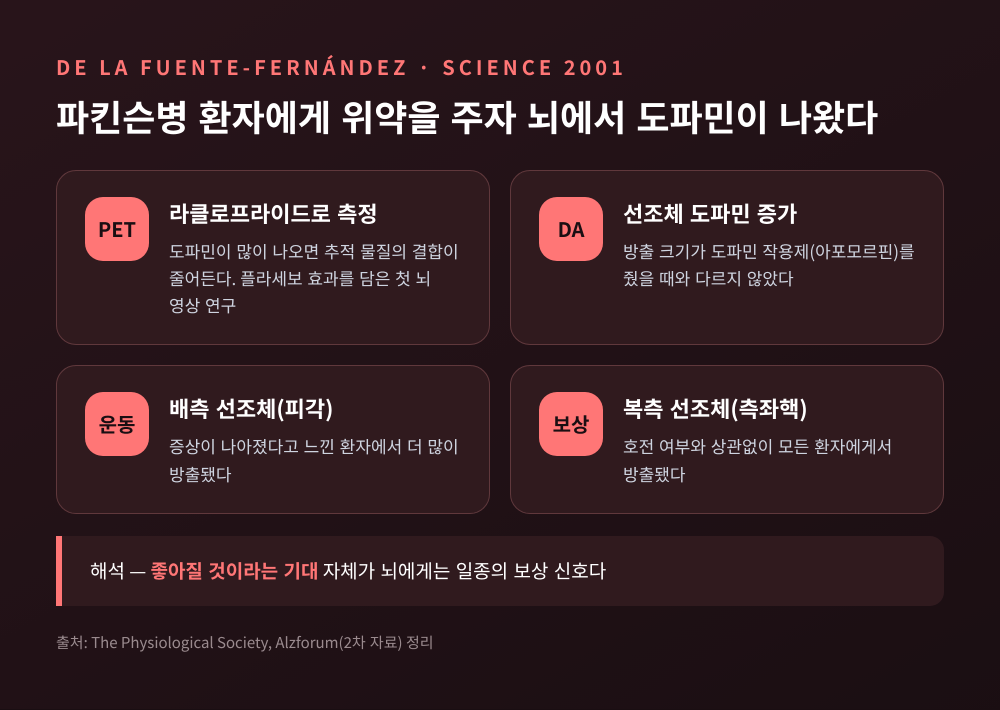
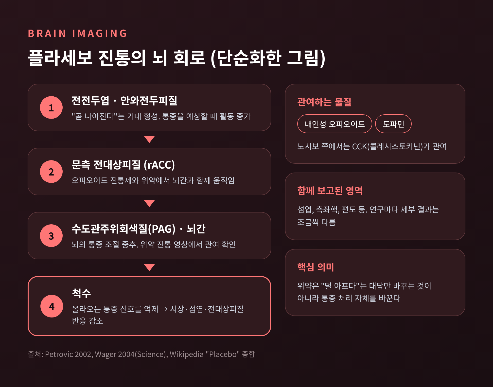
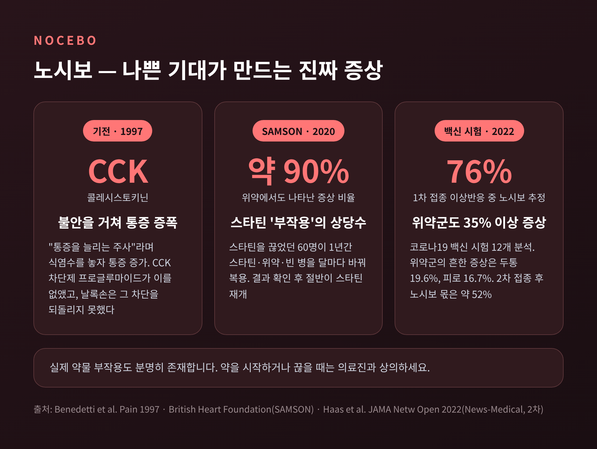
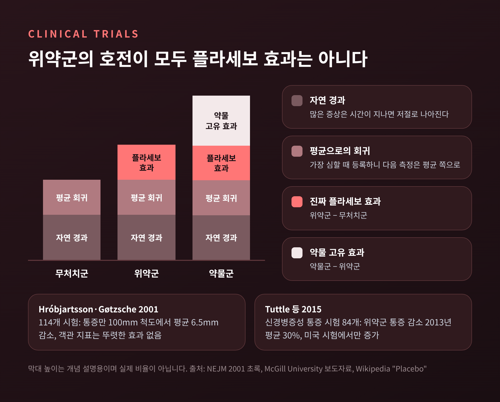

플라세보 효과의 원리 — 가짜 약은 어떻게 진짜 통증을 줄일까

이번 글에서는 플라세보 효과가 뇌와 몸에서 실제로 어떻게 일어나는지 정리해 보겠습니다. "마음먹기 나름"이라는 막연한 설명 대신, 실험으로 확인된 물질과 뇌 부위를 따라가 봅니다.
먼저 세 줄로 요약하면 이렇습니다.
- 플라세보 효과는 '기대'와 '조건화'가 뇌의 내인성 오피오이드·도파민 같은 실제 화학 신호를 움직여 생깁니다.
- 반대로 나쁜 기대는 통증과 부작용을 키우는데, 이것이 노시보 효과입니다.
- 다만 임상시험 위약군의 호전이 모두 플라세보 효과는 아닙니다. 자연 경과와 평균으로의 회귀가 섞여 있습니다.
위약(플라세보)은 소금물이나 설탕 정처럼 약리 성분이 없는 처치입니다. 소금이나 설탕이 갑자기 약효를 얻는 일은 없습니다.
달라지는 것은 그것을 받는 사람의 뇌입니다. 의사의 설명, 주사라는 의식, 병원이라는 장소가 "곧 나아질 것"이라는 기대를 만듭니다. 그 기대가 몸 안의 신호 체계를 실제로 바꾼다는 것이 지난 반세기 연구의 결론입니다.
여기서 한 가지 구분이 필요합니다. 연구자들은 위약군에서 보이는 모든 호전을 '플라세보 반응'이라 부르고, 그중 기대와 맥락이 만든 몫만 '플라세보 효과'라 부릅니다. 이 차이는 글 후반에서 다시 다루겠습니다.
플라세보의 생물학은 사랑니 발치실에서 시작됐습니다. 1978년 미국 UCSF의 Levine, Gordon, Fields는 매복 사랑니를 뽑은 환자 51명을 대상으로 무작위·이중맹검 실험을 했습니다.
설계는 단순합니다. 수술 약 2시간 뒤 첫 주사를, 약 3시간 뒤 두 번째 주사를 놓았습니다. 두 번째 주사는 위약이거나, 오피오이드 수용체를 막는 약인 날록손 10 mg이었습니다.
결과는 이랬습니다.
- 위약을 먼저 맞은 환자의 39%가 통증이 그대로이거나 줄어든 '위약 반응자'였습니다.
- 이들에게 날록손을 주자 통증이 올라가, 위약에 반응하지 않은 환자들과 같은 수준이 됐습니다.
- 위약에 반응하지 않은 환자에게는 날록손이 뚜렷한 차이를 만들지 못했습니다.
날록손은 모르핀 같은 오피오이드의 작용을 막는 약입니다. 그 약이 위약의 진통만 골라서 지웠다는 것은, 위약이 뇌 속 자체 진통 물질(엔도르핀 등 내인성 오피오이드)을 불러냈다는 뜻입니다. 훗날 이 분야의 대표 연구자 Fabrizio Benedetti는 이 연구를 "플라세보의 생물학이 탄생한 순간"이라 평가했습니다.

이 발견은 반대 방향으로도 확인됩니다. 2001년 Benedetti 연구팀은 수술 후 환자에게 진통제를 '몰래' 주입하면, 같은 약을 눈앞에서 주사할 때보다 효과가 유의하게 떨어진다고 보고했습니다. 부프레노르핀, 트라마돌, 케토롤락 등 여러 약에서 같은 경향이 나타났습니다. 우리가 먹는 진짜 진통제의 효과 안에도, 기대가 만든 몫이 섞여 있다는 이야기입니다.
통증만의 이야기는 아닙니다. 2001년 학술지 Science에 실린 de la Fuente-Fernández 연구팀의 실험은 플라세보 효과를 처음으로 뇌 영상에 담았습니다.
연구팀은 파킨슨병 환자에게 위약을 주고 PET(양전자단층촬영)으로 뇌를 찍었습니다. 라클로프라이드라는 추적 물질을 썼는데, 뇌에 도파민이 많이 나오면 이 물질의 결합이 줄어듭니다.
- 위약을 받은 환자들의 선조체에서 도파민 방출이 크게 늘었습니다.
- 그 크기는 실제 도파민 작용제(아포모르핀)를 줬을 때와 다르지 않았습니다.
- 운동 증상이 나아졌다고 느낀 환자는 운동을 담당하는 배측 선조체(피각)에서 도파민을 더 많이 냈습니다.
- 반면 보상과 관련된 복측 선조체(측좌핵)에서는 호전 여부와 상관없이 모두 도파민이 나왔습니다.

연구진은 이 결과를 '좋아질 것이라는 기대' 자체가 뇌에게는 일종의 보상이라는 뜻으로 해석했습니다. 파킨슨병은 도파민을 만드는 신경세포가 줄어드는 병입니다. 남은 세포들이 기대에 반응해 도파민을 짜낸 셈입니다.
뒤이은 연구에서는 파킨슨병 수술 중 시상하핵의 신경세포 하나하나를 기록했습니다. 식염수 주사와 함께 "움직임이 좋아질 것"이라고 말하자, 반응한 환자에서 신경세포의 발화가 실제로 잦아들었습니다. 다만 이런 변화는 일부 환자에게만, 짧게 나타났습니다.
그렇다면 기대는 뇌의 어디에서 만들어질까요. 몇몇 영상 연구가 중요한 단서를 남겼습니다.
2002년 Petrovic 연구팀은 PET으로 오피오이드 진통제와 위약을 비교했습니다. 두 경우 모두 문측 전대상피질과 뇌간이 함께 움직였고, 통증만 있을 때는 그렇지 않았습니다. 위약과 진짜 진통제가 같은 신경 경로를 일부 공유한다는 증거였습니다.
2004년 Wager 연구팀의 fMRI 실험은 시간 순서를 보여줬습니다.
- 통증을 '예상하는' 순간, 위약을 받은 사람의 전전두엽 활동이 올라갔습니다.
- 실제 통증이 올 때는 시상, 섬엽, 전대상피질 같은 통증 처리 영역의 활동이 줄었습니다.
이는 위약이 단지 "덜 아프다고 대답하게" 만드는 것이 아니라, 통증 경험 자체를 바꾼다는 뜻으로 받아들여졌습니다. 지금까지의 연구를 종합하면 전전두엽·안와전두피질·전대상피질·섬엽, 측좌핵, 편도, 수도관주위회색질(PAG), 그리고 척수까지 이 회로에 관여합니다.

대략 이렇게 그려볼 수 있습니다. 전전두엽이 "곧 나아진다"는 기대를 세우고, 전대상피질과 뇌간의 진통 회로를 거쳐 척수로 올라오는 통증 신호를 누르는 구조입니다. 물론 이는 단순화한 그림이며, 연구마다 세부 결과는 조금씩 다릅니다.
플라세보 효과를 만드는 두 축은 기대와 조건화입니다. 기대는 말과 정보로 생기는 의식적 예측입니다. 조건화는 파블로프의 개처럼, 반복된 경험이 몸에 새겨진 학습입니다.
2003년 Benedetti 연구팀은 이 둘을 갈라 보는 실험을 했습니다.
| 구분 | 통증·운동 기능 | 호르몬(성장호르몬·코르티솔) |
|---|---|---|
| 말로 기대를 줄 때 | 크게 달라짐 | 변화 없음 |
| 약으로 미리 조건화했을 때 | 반대 암시를 주면 효과가 상쇄됨 | 위약만으로 호르몬이 변함(반대 암시에도) |
| 해석 | 의식적 과정 → 기대가 주도 | 무의식적 생리 기능 → 조건화가 주도 |
호르몬 실험에서는 수마트립탄이라는 약을 먼저 몇 차례 썼습니다. 이 약은 성장호르몬을 올리고 코르티솔을 낮춥니다. 그 뒤 위약만 줬는데도 같은 호르몬 변화가 나타났습니다. "이번엔 반대로 될 것"이라고 말해도 몸은 학습한 대로 반응했습니다.
조건화의 힘은 면역계에서도 확인됐습니다. 1975년 Ader와 Cohen은 쥐에게 사카린 물과 면역억제제를 함께 줬습니다. 나중에는 사카린 맛만으로 면역이 억제된 것으로 보였고, 이 발견은 뇌와 면역계의 연결을 다루는 정신신경면역학이라는 분야를 낳았습니다.
기대가 몸을 낫게 한다면, 반대도 가능합니다. 부정적인 기대로 증상이 생기거나 심해지는 현상을 노시보(nocebo) 효과라고 합니다.
노시보 역시 화학 신호를 따릅니다. 1997년 Benedetti 연구팀은 수술 후 환자에게 "통증을 늘리는 주사"라며 식염수를 놓았고, 실제로 통증이 커졌습니다. 그런데 콜레시스토키닌(CCK)이라는 물질을 막는 약 프로글루마이드를 섞자 이 노시보 통증이 사라졌습니다. 날록손으로는 이 차단이 되돌려지지 않았습니다. 노시보는 오피오이드가 아닌 CCK 경로, 그리고 불안을 거쳐 작동한다는 해석입니다.
임상 현장의 숫자는 더 실감 납니다.
- SAMSON 시험(2020, NEJM): 부작용 때문에 고지혈증약 스타틴을 끊었던 60명이 1년 동안 스타틴, 위약, 빈 병을 달마다 무작위로 바꿔 먹었습니다. 스타틴을 먹을 때 보고한 증상의 약 90%가 위약을 먹을 때도 나타났습니다. 결과를 확인한 뒤 절반이 스타틴을 다시 시작했습니다.
- 코로나19 백신 시험 12개 메타분석(2022): 위약을 맞은 사람 중 35% 이상이 1차 접종 뒤 두통·피로 같은 전신 증상을 보고했습니다. 연구진은 백신군 이상반응의 76%(1차), 약 52%(2차)를 노시보로 설명할 수 있다고 추산했습니다.

이 숫자들이 부작용이 모두 '기분 탓'이라는 뜻은 아닙니다. 실제 약물 부작용은 분명히 존재합니다. 다만 증상의 상당 부분이 기대와 불안에서 올 수 있다는 점은, 약을 시작하거나 끊을 때 의료진과 충분히 상의해야 하는 이유이기도 합니다.
오랫동안 플라세보에는 '속임'이 필수라고 여겨졌습니다. 지금은 그 전제도 흔들리고 있습니다.
2010년 하버드 의대 Kaptchuk 연구팀은 과민성대장증후군 환자 80명에게 아예 'placebo'라고 적힌 병을 건넸습니다. "설탕 정 같은 것이며, 효과를 믿을 필요도 없다"고 솔직히 설명했습니다. 3주 뒤 적절한 증상 완화를 보고한 비율은 위약군 59%, 아무것도 받지 않은 군 35%였습니다.
2021년 메타분석(11개 연구)도 오픈라벨 위약이 요통, 암 관련 피로, 우울증, 과민성대장증후군 등에서 의미 있는 효과(표준화 평균차 0.72)를 보였다고 정리했습니다. 다만 연구 간 결과 차이가 크고(이질성 76%), 비뚤림 위험도 중간 수준이었습니다. 저자들 스스로 "연구가 아직 초기 단계"라고 적었습니다.
맥락의 힘을 보여준 연구도 있습니다. 2008년 같은 연구팀은 과민성대장증후군 환자 262명을 세 그룹으로 나눴습니다. 대기만 한 그룹은 약 28~30%, 가짜 침만 맞은 그룹은 44%, 가짜 침에 따뜻하고 세심한 상담을 더한 그룹은 62%가 3주 뒤 적절한 완화를 보고했습니다. 같은 가짜 치료라도, 어떤 관계 속에서 받느냐가 결과를 바꾼 것입니다.
여기서 처음에 미뤄둔 구분으로 돌아가겠습니다. 임상시험 위약군이 좋아졌다고 해서, 그 전부가 플라세보 효과는 아닙니다.
위약군의 호전에는 적어도 세 가지가 섞입니다.
- 자연 경과: 많은 증상은 시간이 지나면 저절로 나아집니다.
- 평균으로의 회귀: 증상이 가장 심할 때 병원을 찾고 시험에 등록하므로, 다음 측정에서는 평균 쪽으로 돌아오기 쉽습니다.
- 진짜 플라세보 효과: 기대와 조건화가 만든 생리적 변화입니다.

그래서 신약은 '복용 전보다 좋아졌는가'가 아니라 '위약보다 더 좋아졌는가'로 평가합니다. 진짜 플라세보 효과의 크기를 알려면 여기에 아무 처치도 받지 않는 무처치군이 하나 더 필요합니다.
이 비교를 해보면 플라세보의 명성은 조금 작아집니다. 1955년 Beecher는 15개 연구를 묶어 환자의 약 35%가 위약만으로 만족스럽게 치료됐다고 발표했습니다. 예전엔 이 숫자가 '플라세보의 힘'의 상징이었습니다. 지금은 평균으로의 회귀 등을 고려하지 않았다는 비판을 받습니다.
2001년 Hróbjartsson과 Gøtzsche는 위약군과 무처치군을 함께 둔 시험 114개(약 8,500명, 40개 질환)를 분석했습니다. 혈압처럼 객관적으로 재는 지표나 '나았다/안 나았다' 같은 결과에서는 뚜렷한 위약 효과가 없었습니다. 통증에서는 효과가 있었지만, 100 mm 척도에서 평균 6.5 mm 정도로 작았습니다. 2010년 코크란 업데이트(202개 시험)도 비슷하게, 통증과 구역처럼 환자가 직접 보고하는 결과에서 작은 효과를 확인했습니다.
위약 반응이 시대와 장소에 따라 커지는 현상도 있습니다. 1990~2013년 신경병증성 통증 약물 시험 84개를 분석한 연구에서, 위약군의 통증 감소는 2013년 평균 30%까지 커졌습니다. 흥미롭게도 이 증가는 미국에서만 진행된 시험에서만 나타났고, 이유는 아직 밝혀지지 않았습니다. 위약 반응이 커질수록 진짜 효과가 있는 약도 위약을 이기기 어려워집니다.
정리하면 이렇습니다. 플라세보 효과는 착각이 아니라, 기대와 학습이 오피오이드·도파민·CCK 같은 실제 신호를 움직이는 생물학적 현상입니다. 그러나 그 힘은 통증·구역처럼 환자가 느끼고 보고하는 증상에서 주로 나타나고, 객관적으로 재는 지표에서는 뚜렷하지 않습니다. 병 자체를 고치는 약을 대신할 수는 없다는 뜻입니다.
"위약은 비어 있어도, 그것을 받는 뇌는 비어 있지 않다."
이 글은 교양 차원의 설명이며 특정 치료를 권하는 내용이 아닙니다. 복용 중인 약을 바꾸거나 끊으려 할 때는 반드시 의료진과 상의하시길 권합니다. 그렇다면 의사의 말 한마디와 따뜻한 태도도 치료의 일부일까요. 연구가 지금까지 보여준 바로는, 그렇다고 답할 수 있겠습니다.
- Levine, Gordon & Fields, "The mechanism of placebo analgesia", The Lancet, 1978 — 원문 PDF 사본
- Wikipedia, Placebo · Jon Levine (neuroscientist) · Robert Ader
- The Physiological Society, The placebo response: how words and rituals change brain circuitry
- Alzforum, Putting Parkinson's Placebo Effect on a Chemical Footing (2차 자료)
- Petrovic et al., Science 2002 — 출판물 정보 (2차 자료)
- Wager et al., Science 2004 — 초록
- Benedetti et al., J Neurosci 2003 — 초록
- Benedetti et al., Pain 1997 — 초록
- Thomaidou et al., Frontiers in Neuroscience 2021 — 노시보 통증 신경생물학 리뷰
- Tiwari et al., Frontiers in Pain Research 2022 — Pain Variability and Relief in RCTs
- Harvard Medical School, Placebos Work—Even Without Deception (2010)
- von Wernsdorff et al., Scientific Reports 2021 — 오픈라벨 위약 메타분석
- Science-Based Medicine, Studying placebo effects (Kaptchuk 2008 해설, 2차 자료)
- PainScience, Amanzio et al. 2001 요약 · Beecher 1955 관련 (2차 자료)
- Hróbjartsson & Gøtzsche, NEJM 2001 — 초록
- Cochrane Library, Placebo interventions for all clinical conditions (2010)
- McGill University, Tuttle et al. 2015 보도자료
- British Heart Foundation, SAMSON 시험 (2020)
- News-Medical, COVID-19 백신 시험 노시보 분석 (2022, 2차 자료)